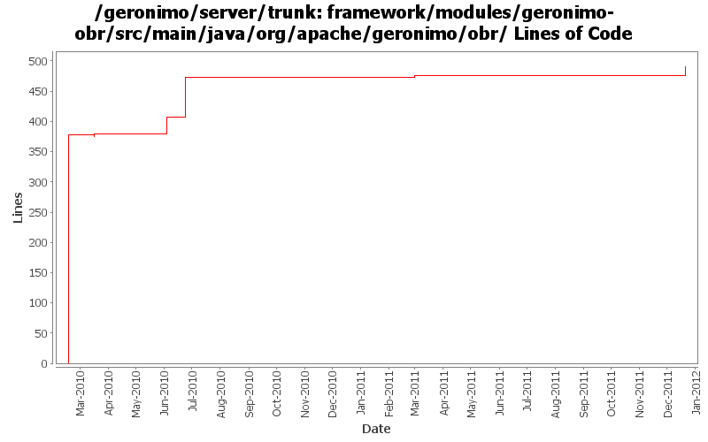

[root]/framework/modules/geronimo-obr/src/main/java/org/apache/geronimo/obr
 model
(7 files, 1101 lines)
model
(7 files, 1101 lines)

| Author | Changes | Lines of Code | Lines per Change |
|---|---|---|---|
| Totals | 16 (100.0%) | 556 (100.0%) | 34.7 |
| djencks | 6 (37.5%) | 384 (69.1%) | 64.0 |
| gawor | 8 (50.0%) | 140 (25.2%) | 17.5 |
| xuhaihong | 2 (12.5%) | 32 (5.8%) | 16.0 |
GERONIMO-6240 Make several base geronimo functions (kernel, deployer, etc) DS services and make the car-maven-plugin take advantage of that. Server assembly doesn't work yet, builds framework.
3 lines of code changed in 1 file:
generate 'fragment' capability
18 lines of code changed in 1 file:
GERONIMO-6058 Replace StringBuffer usage with StringBuilder
1 lines of code changed in 1 file:
Add Debug codes for better error diagnose
31 lines of code changed in 1 file:
Improved Geronimo OBR support. Contains fix for GERONIMO-5392 as well as support for excludes and a shell command for refreshing the repository
83 lines of code changed in 1 file:
generate requirement for Bundle-RequiredExecutionEnvironment header
29 lines of code changed in 1 file:
XBEAN-148 use new xbean-bundleutils
3 lines of code changed in 2 files:
some OBR-related cleanup
5 lines of code changed in 1 file:
GERONIMO-4971: Initial OBR integration for Aries Applications. Some of the OBR resolver code is based on the resolver in Apache Aries
0 lines of code changed in 1 file:
fix build problem
1 lines of code changed in 1 file:
use felix obr api instead of osgi api
4 lines of code changed in 2 files:
GERONIMO-4971 include obr repository.xml in every plugin, and install it into an obr instance when the plugin is installed. Also update the aries plugin and build it. The framework geronimo-obr module is written by Jarek Gawor with minor changes
378 lines of code changed in 3 files: